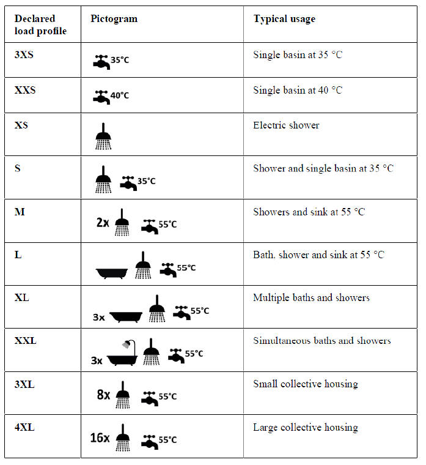

EU_Tapping_Cycle
Path: CARNOT/Load/Hot_Water_Tapping
Purpose:
Hot water consumption with an energy profile according to the european
tapping cycles.
Description:
Domestic hot water consumption defined by the European Tapping Cycles,
given for example in the
[European Commission reglulation
(EU) No 814/2013 of 2 August 2013]. The cycles were originally developped
for the Mandate 324 in 2002 [European Commission 2002]. The tapping cycles
apply to different water heater systems [European Commission 2018].
The block uses the DHW_Energy_Tapping
block since the tapping cycles are mainly based on the tapped energy.
The different tappings in the cycle define a mean temperature (Tm) or a peak
temperature (Tp) to be reached during the tapping. The check
of Tm and Tp must be done in a post treatment of the simulation data.
A bias on the setpoint temperature can be defined. This assures that the tapping
temperature is above the (minimum) setpoint given by the tapping cycle.
Tapping cycles can vary from 3XS to 4XL.

Table : Presentation of the typical usage of a declared load profile as a pictogram on the product label of a dedicated water heater (source: QAIST 2012)
A description of the model and the EU tapping cycles can be found in
the presentation of
[Hafner 2021] at the Carnot User Meeting 2021.
More informations are available, see chapter Literature below.
Input:
| Tc | : | cold water temperature in °C |
Output:
| mdot | : | mass flow of tapped water in kg/s |
| Tset | : | temperature set point in °C |
Parameters and Dialog Box:
Examples:
Open the example explorer from the Matlab command window
ExampleBrowser
or load the examples via the CARNOT library.
Literature:
European Commission reglulation
(EU) No 814/2013 of 2 August 2013
European
Commission 2018: Guidelines accompanying EU regluations 811/2013,812/2013,
813/2013, 814/2013, 2015/1187 and 2015/1189
dowload (09/02/2020) from
https://ec.europa.eu/energy/sites/ener/files/documents/guidelinesspacewaterheaters_final.pdf
European Commission 2002: M 324, Mandate to CEN and CENELEC for the
elaboration and adoption of measurement standards for household appliances
download (09/02/2020) from
https://law.resource.org/pub/eu/mandates/m324.pdf
Characteristics:
| Direct Feedthrough | : | No |
| Sample Time | : | Inherited from driving block |
| Vectorized | : | No |